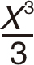
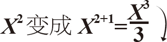
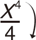
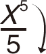

微积分中有一些规则可以帮助你节省计算时间。其中一种被称为幂规则。
微积分中有一些规则可以帮助你节省计算时间。其中一种被称为幂规则。
微积分中有一些规则可以帮助你节省计算时间。其中一种被称为幂规则。
■在计算微分方程或积分方程时，你将需要使用它。
幂规则
微分
幂规则适用于带幂指数的函数，像变量X 2 （X 的2次方）。为了节省计算这个函数的导数的时间，只需将函数的指数调到变量前作为倍数，然后在原来的指数值减1即可。
例1：求函数的导数f （x ）＝x 2 ，将指数2放在x 前面，再将指数2减1。导数是2倍。
例2：f （x ）＝x 3 变成3x 2 。

积分
这里是求不定积分的幂规则。
■当积分函数包含幂项时，执行与微分法相反的操作。
例1：X 2 变成

怎么做？首先，将指数值增加1，然后，除以这个增加后的指数值。

例2：X 3 变成X 3＋1 ＝

例3：X 4 变成X 4＋1 ＝
